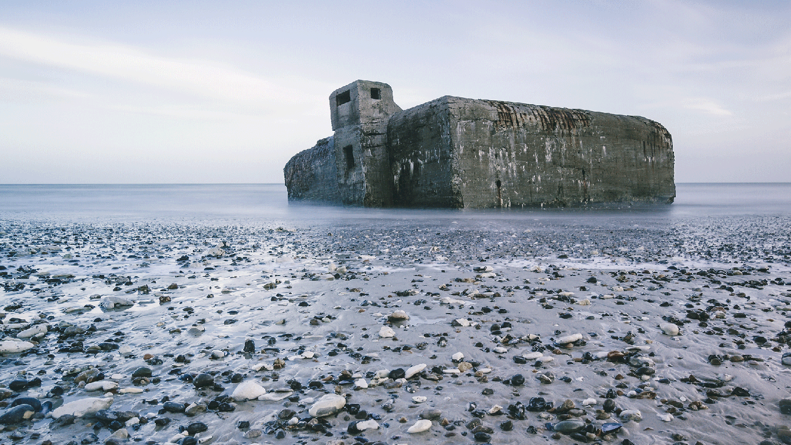

Parteneriat și prosperitate
După Primul Război Mondial, economia daneză a început să evolueze. Cu ajutorul mișcării agricultorilor cooperativi, a avut loc o schimbare pe scară largă de la cultivarea cerealelor la creșterea animalelor. Industrializarea și producția de lactate s-au accelerat și s-a înființat un stat de bunăstare socială.
La 9 aprilie 1940, Danemarca neutră a fost invadată de trupele germane. Copleșită de mașina de război germană, țara a exercitat o minimă rezistență la început. În timpul ocupației de cinci ani, s-a dezvoltat o rezistență subterană pentru a lupta împotriva stăpânirii naziste. La 5 mai 1945, Danemarca a fost eliberată de ocupația germană grație eforturilor Marii Alianțe (Marea Britanie, SUA și Uniunii Sovietice) și rezistenței daneze. Lumina s-a întors în orașele daneze după cinci ani de întuneric.

În timpul celui de-al doilea război mondial, germanii au construit în jur de 2.000 de buncăre ca parte a zidului lor Atlantic. Unul dintre ele este acest buncăr, Vigsø.
Economia daneză postbelică a devenit din ce în ce mai internațională, odată cu creșterea exporturilor, un factor care contribuie la prosperitate. Produsele și mobilierul de design danez au fost populare în întreaga lume, împreună cu slănina daneză, untul și alte produse agricole.
În 1972, Danemarca s-a alăturat Comunității Economice Europene (CEE) - principalul parteneriat economic din Europa - care a devenit ulterior Uniunea Europeană. Danemarca a fost, de asemenea, unul dintre membrii fondatori ai Națiunilor Unite (ONU) și continuă să fie membru al alianței militare - Organizația Tratatului Atlanticului de Nord (NATO).
Astăzi, Danemarca este o monarhie constituțională condusă de o democrație reprezentativă și un puternic apărător al liberului schimb și al drepturilor omului. Danemarca contribuie, de asemenea, la combaterea sărăciei în întreaga lume prin cooperarea sa de dezvoltare de lungă durată.